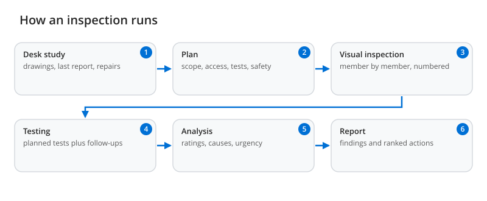

How an inspection runs, from desk study to report
In one sentence: a good inspection is mostly preparation: you arrive knowing the structure, its history and what you're looking for, with the access and the tools to find it.

1. Desk study
Gather drawings (original and as-built), previous inspection reports and photos, repair records, load ratings and any monitoring data. Note what changed since last time and the defects to follow up.
2. Plan
- Scope and inspection type (see Types of inspection).
- Members to inspect and how close.
- Tests to run, where and how many. See Choosing a test method.
- Access: ladders, a lift, an under-bridge inspection truck, rope access, a boat, confined space entry.
- Traffic control and permits for work over or beside a road or railway.
- Safety plan and the qualifications needed. See Who may inspect and test: qualifications.
3. Visual inspection
Work member by member in a set order, so nothing is missed. Mark defects on drawings or a tablet, measure them, photograph them with a scale, and number them. See Visual inspection and access.
4. Testing
Run the planned tests, add tests where the visual inspection found something unexpected, and take cores or samples if needed to calibrate.
5. Analysis
Rate the condition (see Condition ratings: NBI 0 to 9 and element condition states), relate the defects to their likely causes, compare with the last inspection, and decide whether anything needs action now: a load restriction, a closure, temporary shoring.
6. Report
Findings, ratings, photos and recommendations with priorities and rough costs. See Writing an inspection report.
PM notes
Agree with the owner in advance who gets a phone call, and how fast, if the team finds something dangerous on site. Don't wait for the report.
Common mistakes
- Going on site without the previous report.
- No numbering system for defects, so photos can't be matched to locations.
- Booking access equipment for one day when the plan needs two.